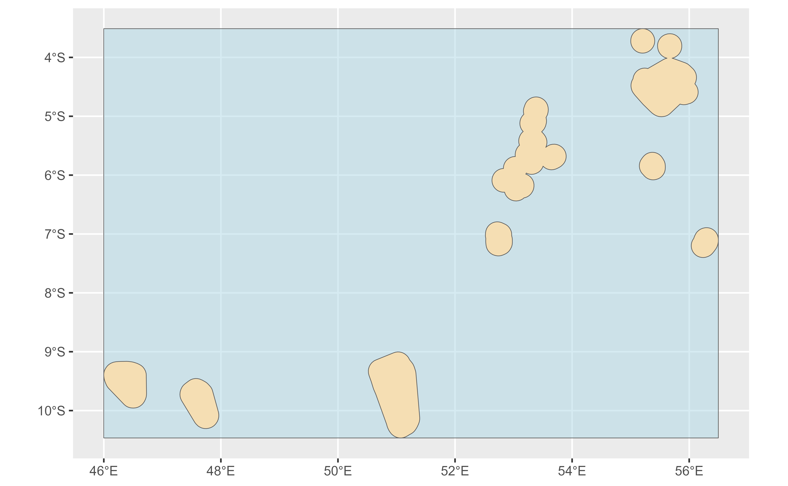

Create a sf polygon object from the coordinates of a bounding box
Arguments
- bbox
numeric vector of 4 elements representing the coordinates of the bounding box. Values should be
c(xmin, ymin, xmax, ymax)- xmin, ymin, xmax, ymax
alternatively, you can use these named parameters instead of
bbox- crs
coordinate reference system, something suitable as input to st_crs
Details
Bounding boxes can be located using different online tools, as Bounding Box Tool.
See also
Get spatial (sf) objects:
geo_address_lookup_sf(),
geo_lite_sf(),
reverse_geo_lite_sf()
Examples
# bounding box of Germany
bbox_GER <- c(5.86631529, 47.27011137, 15.04193189, 55.09916098)
bbox_GER_sf <- bbox_to_poly(bbox_GER)
library(ggplot2)
ggplot(bbox_GER_sf) +
geom_sf()
# \donttest{
# Extract the bounding box of a sf object
sfobj <- geo_lite_sf("seychelles", points_only = FALSE)
sfobj
#> Simple feature collection with 1 feature and 2 fields
#> Geometry type: MULTIPOLYGON
#> Dimension: XY
#> Bounding box: xmin: 45.99888 ymin: -10.46493 xmax: 56.49794 ymax: -3.512
#> Geodetic CRS: WGS 84
#> # A tibble: 1 × 3
#> query address geometry
#> * <chr> <chr> <MULTIPOLYGON [°]>
#> 1 seychelles Sesel (((45.99888 -9.401015, 46.00121 -9.427337, 46.00564 -9.456…
# Need at least one non-empty object
if (any(!sf::st_is_empty(sfobj))) {
bbox <- sf::st_bbox(sfobj)
bbox
bbox_sfobj <- bbox_to_poly(bbox)
ggplot(bbox_sfobj) +
geom_sf(fill = "lightblue", alpha = 0.5) +
geom_sf(data = sfobj, fill = "wheat")
}

# }